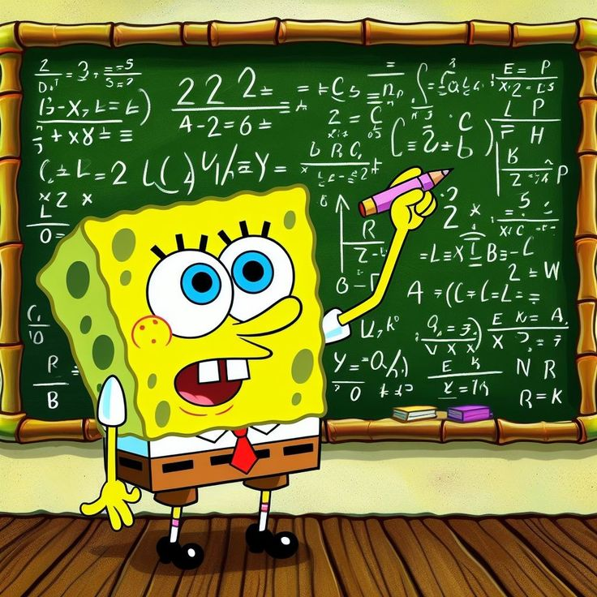

Operasi Baris Elementer Pada Matriks🐳#

“Apa Itu Operasi Bilangan Elementer ?”2.1 Operasi Baris Elementer Pada Matriks#
2.1.1 Definisi Operasi Baris Pada Matriks#
Operasi Baris Elementer (OBE) adalah operasi dasar yang dilakukan terhadap baris-baris suatu matriks dengan tujuan mengubah bentuk matriks menjadi lebih sederhana tanpa mengubah solusi sistem persamaan linear yang direpresentasikan oleh matriks tersebut.
Dengan kata lain, operasi ini hanya mengubah tampilan matriks, tetapi nilai solusi tetap sama (ekuivalen).
Operasi baris elementer banyak digunakan dalam :
penyelesaian Sistem Persamaan Linear (SPL),
metode eliminasi Gauss,
metode Gauss–Jordan,
pencarian invers matriks,
menentukan rank matriks.
Proses mengubah suatu matriks menggunakan operasi baris elementer disebut reduksi baris (row reduction). Dua matriks disebut ekuivalen baris (row quivalen) jika salah satunya dapat diperoleh dari yang lain melalui sejumlah hingga operasi baris elementer.
1️⃣ Pertukaran Dua Baris (Row Switching)
Menukar posisi dua baris dalam matriks.
Notasi:
Makna: Baris ke-𝑖 ditukar dengan baris ke-j.
Contoh: $\( \begin{bmatrix} 1 & 2 \\ 3 & 4 \end{bmatrix} \rightarrow \begin{bmatrix} 3 & 4 \\ 1 & 2 \end{bmatrix} \)$
2️⃣ Perkalian Baris dengan Konstanta (Row Scaling)
Mengalikan semua elemen dalam satu baris dengan suatu bilangan bukan nol.
Notasi: $\( R_i \rightarrow kR_i,\quad k \neq 0 \)$
Makna:
Setiap elemen pada baris ke-𝑖 dikalikan konstanta
𝑘.
Contoh: $\( R_1 \rightarrow 2R_1 \)\( \)\( \begin{bmatrix} 1 & 2 \\ 3 & 4 \end{bmatrix} \rightarrow \begin{bmatrix} 2 & 4 \\ 3 & 4 \end{bmatrix} \)$
3️⃣ Penjumlahan Baris (Row Replacement)
Menambahkan kelipatan suatu baris ke baris lainnya.
Notasi: $\( R_i \rightarrow R_i + kR_j \)$
Makna:
Baris ke-𝑖 diganti dengan hasil penjumlahan baris ke-𝑖 dan kelipatan baris ke-𝑗.
Contoh: $\( R_2 \rightarrow R_2 - 3R_1 \)\( \)\( \begin{bmatrix} 1 & 2 \\ 3 & 4 \end{bmatrix} \rightarrow \begin{bmatrix} 1 & 2 \\ 0 & -2 \end{bmatrix} \)$
2.1.2 Notasi Operasi Bilangan Elementer#
Notasi operasi baris elementer digunakan untuk menunjukkan perubahan yang dilakukan pada baris suatu matriks tanpa menuliskan seluruh proses perhitungan.
Biasanya huruf 𝑅 digunakan sebagai singkatan dari Row (baris).
Notasi Pertukaran Baris
Bentuk notasi : $\( R_i \leftrightarrow R_j \)$
Arti notasi :
\(R_{i}\) : Baris ke-\(i\)
\(R_{j}\) : Baris ke-𝑗
↔ : Ditukar
Notasi Perkalian Baris Dengan Konstanta
Bentuk notasi : $\( R_i \rightarrow kR_i,\quad k \neq 0 \)$
Arti notasi :
\(k\) : Konstanta (bilangan real)
\(k\) \( \neq \) 0 : Tidak Boleh nol
→ : diganti menjadi
Notasi Penjumlahan Baris (Penggantian Baris)
Bentuk notasi : $\( R_i \rightarrow R_i + kR_j \)$
Arti notasi :
Baris \(i\) diganti hasil penjumlahan :
Baris \(i\) lama
Ditambah kelipatan baris \(j\)
2.1.3 Langkah - Langkah Menjalankan Operasi Baris Elementer#
Eliminasi Gauss (Gaussian elimination) adalah algoritma yang digunakan untuk mengubah suatu matriks menjadi bentuk eselon baris (row echelon form) dengan menggunakan operasi baris elementer.
Metode ini menerima sebuah matriks 𝐴 sebagai input dan menghasilkan matriks 𝐵 yang ekuivalen baris.
Langkah-Langkah Eliminasi Gauss :
Menentukan Pivot Pertama
Temukan kolom paling kiri yang memiliki elemen tak nol. Jika perlu, lakukan pertukaran baris (row swap) untuk memindahkan baris dengan elemen tak nol tersebut ke posisi paling atas.Membuat Leading 1
Kalikan baris teratas (baris pivot) dengan suatu skalar sehingga elemen utama (pivot) menjadi 1. Elemen utama ini disebut eading one.Membuat Nol di Bawah Pivot
Untuk setiap baris di bawah baris pivot, lakukan operasi:
\(R_i \rightarrow R_i + k R_{\text{pivot}}\)
<agar semua elemen di bawah pivot menjadi nol.Ulangi Proses Ulangi langkah 1–3 pada submatriks yang berada di bawah baris pivot terakhir.
Proses ini dilanjutkan sampai seluruh matriks berada dalam bentuk eselon baris.
2.1.4 Contoh Proses Eliminasi Gauss#
Selesaikan sistem persamaan berikut:
1. Bentuk Matriks Augmented#
2. Eliminasi Kolom Pertama#
Hasil:
3. Eliminasi Kolom Kedua#
Hasil:
4. Substitusi Mundur#
Dari baris ketiga:
Baris kedua:
Baris pertama:
Hasil Akhir
Pengerjan Soal OBE Dengan Coding#
- \[\begin{split} \begin{cases} x + 2y + z = 9 \\ 2x + 3y + 4z = 20 \\ 3x + y + 3z = 13 \end{cases} \end{split}\]
# Jawab :
import numpy as np
# Membuat matriks augmented
A = np.array([
[1, 2, 1, 9],
[2, 3, 4, 20],
[3, 1, 3, 13]
], dtype=float)
n = len(A)
# Proses Eliminasi Gauss (Forward Elimination)
for i in range(n):
# Membuat pivot = 1 (jika tidak nol)
if A[i][i] != 0:
A[i] = A[i] / A[i][i]
# Menghilangkan elemen di bawah pivot
for j in range(i+1, n):
A[j] = A[j] - A[j][i] * A[i]
print("Matriks setelah eliminasi:")
print(A)
# Substitusi Mundur (Back Substitution)
x = np.zeros(n)
for i in range(n-1, -1, -1):
x[i] = A[i][-1] - np.dot(A[i, i+1:n], x[i+1:n])
print("\nSolusi:")
for i in range(n):
print(f"x{i+1} =", x[i])
---------------------------------------------------------------------------
ModuleNotFoundError Traceback (most recent call last)
Cell In[1], line 2
1 # Jawab :
----> 2 import numpy as np
4 # Membuat matriks augmented
5 A = np.array([
6 [1, 2, 1, 9],
7 [2, 3, 4, 20],
8 [3, 1, 3, 13]
9 ], dtype=float)
ModuleNotFoundError: No module named 'numpy'
Selesaikan sistem persamaan linear berikut dengan metode Eliminasi Gauss:
#Jawab :
import numpy as np
# Matriks augmented
A = np.array([
[2, -1, 3, 7],
[4, 2, -1, 1],
[-2, 1, 2, 4]
], dtype=float)
n = len(A)
print("Matriks Awal:")
print(A)
# ======================
# Eliminasi Gauss (OBE)
# ======================
for i in range(n):
# Normalisasi pivot menjadi 1
if A[i][i] != 0:
A[i] = A[i] / A[i][i]
# Eliminasi elemen di bawah pivot
for j in range(i+1, n):
A[j] = A[j] - A[j][i] * A[i]
print("\nMatriks Setelah Eliminasi:")
print(A)
# ======================
# Substitusi Mundur
# ======================
x = np.zeros(n)
for i in range(n-1, -1, -1):
x[i] = A[i][-1] - np.dot(A[i, i+1:n], x[i+1:n])
print("\nSolusi:")
print("x =", x[0])
print("y =", x[1])
print("z =", x[2])
Matriks Awal:
[[ 2. -1. 3. 7.]
[ 4. 2. -1. 1.]
[-2. 1. 2. 4.]]
Matriks Setelah Eliminasi:
[[ 1. -0.5 1.5 3.5 ]
[ 0. 1. -1.75 -3.25]
[ 0. 0. 1. 2.2 ]]
Solusi:
x = 0.5
y = 0.6000000000000005
z = 2.2
Soal PPT
Selesaikan sistem persamaan linear berikut:
import numpy as np
# Matriks augmented
A = np.array([
[8, 1, 1, 19],
[1, 2, 3, 9],
[2, 1, -1, 5]
], dtype=float)
n = len(A)
print("Matriks Awal:")
print(A)
# ======================
# Eliminasi Gauss (OBE)
# ======================
for i in range(n):
# Normalisasi pivot menjadi 1
if A[i][i] != 0:
A[i] = A[i] / A[i][i]
# Eliminasi elemen di bawah pivot
for j in range(i+1, n):
A[j] = A[j] - A[j][i] * A[i]
print("\nMatriks Setelah Eliminasi:")
print(A)
# ======================
# Substitusi Mundur
# ======================
x = np.zeros(n)
for i in range(n-1, -1, -1):
x[i] = A[i][-1] - np.dot(A[i, i+1:n], x[i+1:n])
print("\nSolusi:")
print("x1 =", x[0])
print("x2 =", x[1])
print("x3 =", x[2])
Matriks Awal:
[[ 8. 1. 1. 19.]
[ 1. 2. 3. 9.]
[ 2. 1. -1. 5.]]
Matriks Setelah Eliminasi:
[[ 1. 0.125 0.125 2.375 ]
[ 0. 1. 1.53333333 3.53333333]
[-0. -0. 1. 1. ]]
Solusi:
x1 = 2.0
x2 = 2.0
x3 = 0.9999999999999998